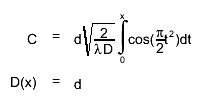
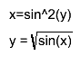
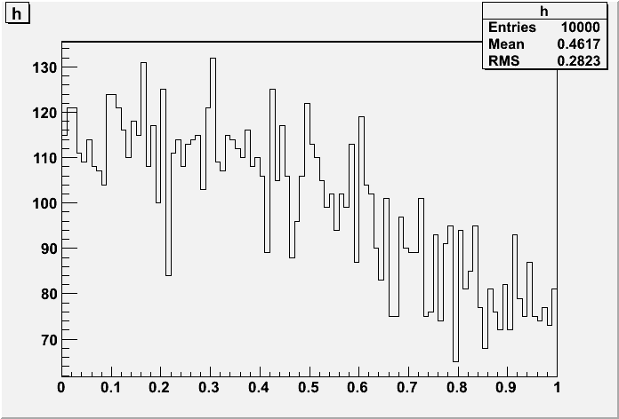

class TDocParser: public TObject
Parse C++ source or header, and extract documentation. Also handles special macros like
{kind=link}
{
TGMainFrame* f = new TGMainFrame(0, 100, 100);
f->SetName("testMainFrame"n c's part of the name of the image
TGButton* b = new TGTextButton(f, "Test Button");
f->AddFrame(b);
f->MapSubwindows();
f->Resize(f->GetDefaultSize());
f->MapWindow();
return f;
}or multiline Latex aligned at =:  even without alignment:  and what about running an external macro?
{kind=link}

and some nested stuff which doesn't work yet:/* BEGIN_LATEX Wow,^{an}_{image}^{inside}_{a}^{html}_{block} END_LATEX */
Function Members (Methods)
public:
| TDocParser(TDocOutput& docOutput) | |
| TDocParser(TClassDocOutput& docOutput, TClass* cl) | |
| virtual | ~TDocParser() |
| void | TObject::AbstractMethod(const char* method) const |
| static void | AnchorFromLine(const TString& line, TString& anchor) |
| virtual void | TObject::AppendPad(Option_t* option = "") |
| virtual void | TObject::Browse(TBrowser* b) |
| static TClass* | Class() |
| virtual const char* | TObject::ClassName() const |
| virtual void | TObject::Clear(Option_t* = "") |
| virtual TObject* | TObject::Clone(const char* newname = "") const |
| virtual Int_t | TObject::Compare(const TObject* obj) const |
| void | Convert(ostream& out, istream& in, const char* relpath, Bool_t isCode, Bool_t interpretDirectives) |
| virtual void | TObject::Copy(TObject& object) const |
| virtual void | DecorateKeywords(TString& text) |
| virtual void | DecorateKeywords(ostream& out, const char* text) |
| void | DecrementMethodCount(const char* name) |
| virtual void | TObject::Delete(Option_t* option = "")MENU |
| virtual void | DeleteDirectiveOutput() const |
| virtual Int_t | TObject::DistancetoPrimitive(Int_t px, Int_t py) |
| virtual void | TObject::Draw(Option_t* option = "") |
| virtual void | TObject::DrawClass() constMENU |
| virtual TObject* | TObject::DrawClone(Option_t* option = "") constMENU |
| virtual void | TObject::Dump() constMENU |
| virtual void | TObject::Error(const char* method, const char* msgfmt) const |
| virtual void | TObject::Execute(const char* method, const char* params, Int_t* error = 0) |
| virtual void | TObject::Execute(TMethod* method, TObjArray* params, Int_t* error = 0) |
| virtual void | TObject::ExecuteEvent(Int_t event, Int_t px, Int_t py) |
| virtual void | TObject::Fatal(const char* method, const char* msgfmt) const |
| virtual TObject* | TObject::FindObject(const char* name) const |
| virtual TObject* | TObject::FindObject(const TObject* obj) const |
| TClass* | GetCurrentClass() const |
| void | GetCurrentModule(TString& out_module) const |
| const TList* | GetDataMembers(TDocParser::EAccess access) const |
| TDocOutput* | GetDocOutput() const |
| virtual Option_t* | TObject::GetDrawOption() const |
| static Long_t | TObject::GetDtorOnly() |
| const TList* | GetEnums(TDocParser::EAccess access) const |
| virtual const char* | TObject::GetIconName() const |
| Long_t | GetLineNumber() const |
| const TList* | GetMethods(TDocParser::EAccess access) const |
| virtual const char* | TObject::GetName() const |
| virtual char* | TObject::GetObjectInfo(Int_t px, Int_t py) const |
| static Bool_t | TObject::GetObjectStat() |
| virtual Option_t* | TObject::GetOption() const |
| const char* | GetSourceInfo(TDocParser::ESourceInfo type) const |
| virtual const char* | TObject::GetTitle() const |
| virtual UInt_t | TObject::GetUniqueID() const |
| virtual Bool_t | TObject::HandleTimer(TTimer* timer) |
| virtual ULong_t | TObject::Hash() const |
| UInt_t | InContext(Int_t context) const |
| virtual void | TObject::Info(const char* method, const char* msgfmt) const |
| virtual Bool_t | TObject::InheritsFrom(const char* classname) const |
| virtual Bool_t | TObject::InheritsFrom(const TClass* cl) const |
| virtual void | TObject::Inspect() constMENU |
| void | TObject::InvertBit(UInt_t f) |
| virtual TClass* | IsA() const |
| virtual Bool_t | TObject::IsEqual(const TObject* obj) const |
| virtual Bool_t | TObject::IsFolder() const |
| static Bool_t | IsName(UChar_t c) |
| Bool_t | TObject::IsOnHeap() const |
| virtual Bool_t | TObject::IsSortable() const |
| static Bool_t | IsWord(UChar_t c) |
| Bool_t | TObject::IsZombie() const |
| virtual void | TObject::ls(Option_t* option = "") const |
| void | TObject::MayNotUse(const char* method) const |
| virtual Bool_t | TObject::Notify() |
| void | TObject::Obsolete(const char* method, const char* asOfVers, const char* removedFromVers) const |
| static void | TObject::operator delete(void* ptr) |
| static void | TObject::operator delete(void* ptr, void* vp) |
| static void | TObject::operator delete[](void* ptr) |
| static void | TObject::operator delete[](void* ptr, void* vp) |
| void* | TObject::operator new(size_t sz) |
| void* | TObject::operator new(size_t sz, void* vp) |
| void* | TObject::operator new[](size_t sz) |
| void* | TObject::operator new[](size_t sz, void* vp) |
| TObject& | TObject::operator=(const TObject& rhs) |
| virtual void | TObject::Paint(Option_t* option = "") |
| virtual void | Parse(ostream& out) |
| virtual void | TObject::Pop() |
| virtual void | TObject::Print(Option_t* option = "") const |
| virtual Int_t | TObject::Read(const char* name) |
| virtual void | TObject::RecursiveRemove(TObject* obj) |
| void | TObject::ResetBit(UInt_t f) |
| virtual void | TObject::SaveAs(const char* filename = "", Option_t* option = "") constMENU |
| virtual void | TObject::SavePrimitive(ostream& out, Option_t* option = "") |
| void | TObject::SetBit(UInt_t f) |
| void | TObject::SetBit(UInt_t f, Bool_t set) |
| void | SetCurrentModule(const char* module) |
| virtual void | TObject::SetDrawOption(Option_t* option = "")MENU |
| static void | TObject::SetDtorOnly(void* obj) |
| static void | TObject::SetObjectStat(Bool_t stat) |
| virtual void | TObject::SetUniqueID(UInt_t uid) |
| virtual void | ShowMembers(TMemberInspector& insp) |
| virtual void | Streamer(TBuffer& b) |
| void | StreamerNVirtual(TBuffer& b) |
| static Bool_t | Strip(TString& s) |
| virtual void | TObject::SysError(const char* method, const char* msgfmt) const |
| Bool_t | TObject::TestBit(UInt_t f) const |
| Int_t | TObject::TestBits(UInt_t f) const |
| virtual void | TObject::UseCurrentStyle() |
| virtual void | TObject::Warning(const char* method, const char* msgfmt) const |
| virtual Int_t | TObject::Write(const char* name = 0, Int_t option = 0, Int_t bufsize = 0) |
| virtual Int_t | TObject::Write(const char* name = 0, Int_t option = 0, Int_t bufsize = 0) const |
protected:
| void | AddClassDataMembersRecursively(TBaseClass* bc) |
| void | AddClassMethodsRecursively(TBaseClass* bc) |
| TDocParser::EParseContext | Context() const |
| virtual void | TObject::DoError(int level, const char* location, const char* fmt, va_list va) const |
| virtual void | ExpandCPPLine(TString& line, Ssiz_t& pos) |
| virtual Bool_t | HandleDirective(TString& keyword, Ssiz_t& pos, TString& word, Ssiz_t& copiedToCommentUpTo) |
| virtual void | InitKeywords() const |
| virtual TClass* | IsDirective(const TString& line, Ssiz_t pos, const TString& word, Bool_t& begin) const |
| TMethod* | LocateMethodInCurrentLine(Ssiz_t& posMethodName, TString& ret, TString& name, TString& params, Bool_t& isconst, ostream& srcOut, TString& anchor, ifstream& sourcefile, Bool_t allowPureVirtual) |
| void | LocateMethods(ostream& out, const char* filename, Bool_t lookForSourceInfo = kTRUE, Bool_t useDocxxStyle = kFALSE, Bool_t allowPureVirtual = kFALSE, const char* methodPattern = 0, const char* sourceExt = 0) |
| void | LocateMethodsInHeaderClassDecl(ostream& out) |
| void | LocateMethodsInHeaderInline(ostream& out) |
| void | LocateMethodsInSource(ostream& out) |
| void | TObject::MakeZombie() |
| virtual Bool_t | ProcessComment() |
| void | RemoveCommentContext(Bool_t cxxcomment) |
| void | WriteClassDoc(ostream& out, Bool_t first = kTRUE) |
| void | WriteMethod(ostream& out, TString& ret, TString& name, TString& params, Bool_t isconst, const char* file, TString& anchor, TString& codeOneLiner) |
| void | WriteSourceLine(ostream& out) |
Data Members
public:
| enum EDocContext { | kIgnore | |
| kDocFunc | ||
| kDocClass | ||
| kNumDocContexts | ||
| }; | ||
| enum ESourceInfo { | kInfoLastUpdate | |
| kInfoAuthor | ||
| kInfoCopyright | ||
| kInfoLastChanged | ||
| kInfoLastGenerated | ||
| kNumSourceInfos | ||
| }; | ||
| enum EAccess { | kPrivate | |
| kProtected | ||
| kPublic | ||
| }; | ||
| enum EParseContext { | kNoContext | |
| kCode | ||
| kComment | ||
| kDirective | ||
| kString | ||
| kKeyword | ||
| kCPP | ||
| kVerbatim | ||
| kNumParseContexts | ||
| kParseContextMask | ||
| }; | ||
| enum EParseContextFlag { | kCXXComment | |
| kParseContextFlagMask | ||
| }; | ||
| enum { | kClassDoc_Uninitialized | |
| kClassDoc_LookingNothingFound | ||
| kClassDoc_LookingHaveSomething | ||
| kClassDoc_Written | ||
| kClassDoc_Ignore | ||
| kClassDoc_NumStates | ||
| }; | ||
| enum TObject::EStatusBits { | kCanDelete | |
| kMustCleanup | ||
| kObjInCanvas | ||
| kIsReferenced | ||
| kHasUUID | ||
| kCannotPick | ||
| kNoContextMenu | ||
| kInvalidObject | ||
| }; | ||
| enum TObject::[unnamed] { | kIsOnHeap | |
| kNotDeleted | ||
| kZombie | ||
| kBitMask | ||
| kSingleKey | ||
| kOverwrite | ||
| kWriteDelete | ||
| }; |
protected:
| Bool_t | fAllowDirectives | whether directives are to be interpreted |
| Bool_t | fCheckForMethod | whether to check the current line for a method |
| TString | fClassDescrTag | tag for finding the class description |
| enum TDocParser:: | fClassDocState | whether we found the class description |
| TString | fComment | current comment |
| Bool_t | fCommentAtBOL | at the beginning of the current line, fParseContext contained kComment |
| TClass* | fCurrentClass | current class context of sources being parsed |
| TString | fCurrentFile | current source / header file name |
| TString | fCurrentMethodTag | name_idx of the currently parsed method |
| TString | fCurrentModule | current module context of sources being parsed |
| TList | fDataMembers[6] | data members (by access, plus enums) |
| Int_t | fDirectiveCount | index of directive for current method |
| TList | fDirectiveHandlers | handler for doc directives (TDocDirective objects) |
| TDocParser::EDocContext | fDocContext | current context of parsed sources for documenting |
| TDocOutput* | fDocOutput | TDocOutput invoking us |
| set<UInt_t> | fExtraLinesWithAnchor | lines that need an additional anchor |
| TString | fFirstClassDoc | first class-doc found - per file, taken if fLastClassDoc is empty |
| THtml* | fHtml | THtml object using us |
| TString | fLastClassDoc | last class-doc found - becomes class doc at ClassImp or first method |
| TString | fLineComment | current line with links and directives for doc |
| UInt_t | fLineNo | current line number |
| Long_t | fLineNumber | source line number |
| TString | fLineRaw | current line |
| TString | fLineSource | current line with links |
| TString | fLineStripped | current line without surrounding spaces |
| map<std::string,Int_t> | fMethodCounts | number of undocumented overloads |
| THashList | fMethods[3] | methods as TMethodWrapper objects (by access) |
| list<UInt_t> | fParseContext | current context of parsed sources |
| TClass* | fRecentClass | recently seen class context of sources being parsed, e.g. for Convert() |
| TString | fSourceInfo[5] | author, last changed, ... |
| TString | fSourceInfoTags[5] | tags for source info elements (copyright, last changed, author) |
| static set<std::string> | fgKeywords | C++ keywords |
Class Charts
{kind=link}
{kind=link}
{kind=link}
{kind=link}
Function documentation
void AddClassMethodsRecursively(TBaseClass* bc)
Add accessible (i.e. non-private) methods of base class bc and its base classes' methods to methodNames. If bc==0, we add fCurrentClass's methods (and also private functions).
void AddClassDataMembersRecursively(TBaseClass* bc)
Add data members of fCurrentClass and of bc to datamembers, recursively. Real data members are in idx 0..2 (public, protected, private access), enum constants in idx 3..5.
void AnchorFromLine(const TString& line, TString& anchor)
Create an anchor from the given line, by hashing it and convertig the hash into a custom base64 string.
void Convert(ostream& out, istream& in, const char* relpath, Bool_t isCode, Bool_t interpretDirectives)
Parse text file "in", add links etc, and write output to "out". If "isCode", "in" is assumed to be C++ code.
void DecorateKeywords(TString& text)
Find keywords in line and create URLs around them. Escape characters with a special meaning for HTML. Protect "Begin_Html"/"End_Html" pairs, and set the parsing context. Evaluate sequences like a::b->c. Skip regions where directives are active.
void DecrementMethodCount(const char* name)
reduce method count for method called name, removing it from fMethodCounts once the count reaches 0.
void DeleteDirectiveOutput() const
Delete output generated by prior runs of all known directives; the output file names might have changes.
void ExpandCPPLine(TString& line, Ssiz_t& pos)
Expand preprocessor statements
Input: line - line containing the CPP statement,
pos - position of '#'
NOTE: Looks for the #include statements and
creates link to the corresponding file
if such file exists
void GetCurrentModule(TString& out_module) const
Return the name of module for which sources are currently parsed.
Bool_t HandleDirective(TString& keyword, Ssiz_t& pos, TString& word, Ssiz_t& copiedToCommentUpTo)
Process directives to the documentation engine, like "Begin_Html" / "End_Html", "Begin_Macro" / "End_Macro", and "Begin_Latex" / "End_Latex".
UInt_t InContext(Int_t context) const
checks whether we are in a parse context, return the entry closest to the current context. If context is a EParseContextFlag just look for the first match in the flags
TClass* IsDirective(const TString& line, Ssiz_t pos, const TString& word, Bool_t& begin) const
return whether word at line's pos is a valid directive, and returns its TDocDirective's TClass object, or 0 if it's not a directive. Set begin to kTRUE for "Begin_..." You can implement your own handlers by implementing a class deriving from TDocHandler, and calling it TDocTagDirective for "BEGIN_TAG", "END_TAG" blocks.
Bool_t IsName(UChar_t c)
Check if c is a valid C++ name character
Input: c - a single character
Output: TRUE if c is a valid C++ name character
and FALSE if it's not.
NOTE: Valid name characters are [a..zA..Z0..9_~],
Bool_t IsWord(UChar_t c)
Check if c is a valid first character for C++ name
Input: c - a single character
Output: TRUE if c is a valid first character for C++ name,
and FALSE if it's not.
NOTE: Valid first characters are [a..zA..Z_~]
TMethod* LocateMethodInCurrentLine(Ssiz_t& posMethodName, TString& ret, TString& name, TString& params, Bool_t& isconst, ostream& srcOut, TString& anchor, ifstream& sourcefile, Bool_t allowPureVirtual)
Search for a method starting at posMethodName, and return its return type, its name, and its arguments. If the end of arguments is not found in the current line, get a new line from sourceFile, beautify it to srcOut, creating an anchor as necessary. When this function returns, posMethodName points to the end of the function declaration, i.e. right after the arguments' closing bracket. If posMethodName == kNPOS, we look for the first matching method in fMethodCounts.
void Parse(ostream& out)
Locate methods, starting in the source file, then inline, then immediately inside the class declaration. While doing that also find the class description and special tags like the macro tag etc.
void LocateMethods(ostream& out, const char* filename, Bool_t lookForSourceInfo = kTRUE, Bool_t useDocxxStyle = kFALSE, Bool_t allowPureVirtual = kFALSE, const char* methodPattern = 0, const char* sourceExt = 0)
Collect methods from the source or header file called filename. It generates a beautified version of the source file on the fly; the output file is given by the fCurrentClass's name, and sourceExt. Documentation is extracted to out. lookForSourceInfo: if set, author, lastUpdate, and copyright are extracted (i.e. the values contained in fSourceInfo) useDocxxStyle: if set, documentation can be in front of the method name, not only inside the method. Useful doc Doc++/Doxygen style, and inline methods. lookForClassDescr: if set, the first line matching the class description rules is assumed to be the class description for fCurrentClass; the description is written to out. methodPattern: if set, methods have to be prepended by this tag. Usually the class name + "::". In header files, looking for in-place function definitions, this should be 0. In that case, only functions in fMethodCounts are searched for.
void LocateMethodsInSource(ostream& out)
Given fCurrentClass, look for methods in its source file, and extract documentation to out, while beautifying the source file in parallel.
void LocateMethodsInHeaderInline(ostream& out)
Given fCurrentClass, look for methods in its header file, and extract documentation to out.
void LocateMethodsInHeaderClassDecl(ostream& out)
Given fCurrentClass, look for methods in its header file's class declaration block, and extract documentation to out, while beautifying the header file in parallel.
void RemoveCommentContext(Bool_t cxxcomment)
remove the top-most comment context that matches cxxcomment,
void WriteClassDoc(ostream& out, Bool_t first = kTRUE)
Write the class description depending (among others) on fClassDocState.
void WriteMethod(ostream& out, TString& ret, TString& name, TString& params, Bool_t isconst, const char* file, TString& anchor, TString& codeOneLiner)
Write a method, forwarding to TClassDocOutput